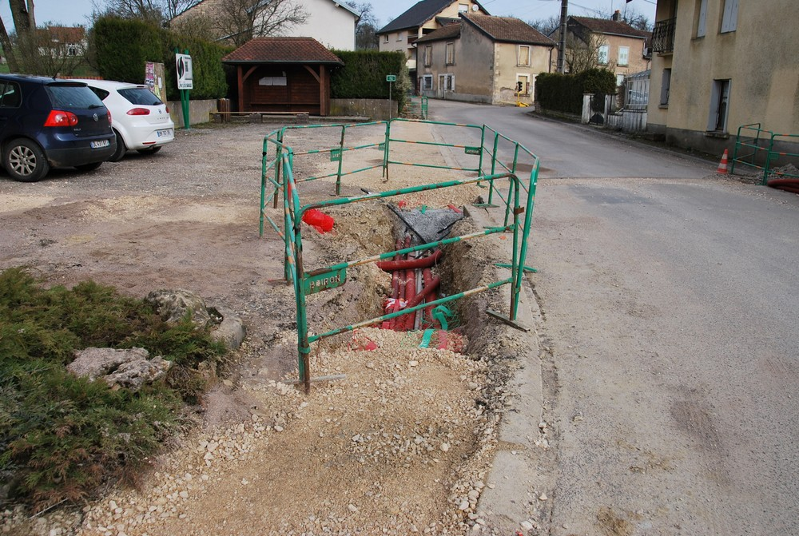
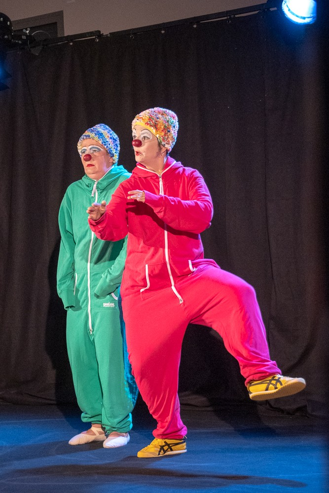
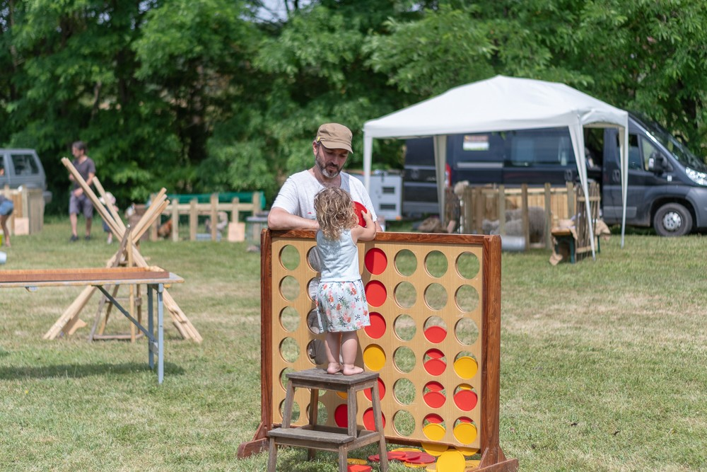

L'équipe
Madame, Monsieur,
Le dimanche 15 mars prochain, vous êtes appelés à choisir les 11 membres du futur Conseil municipal pour les 6 années à venir.
Nous sollicitons de nouveau vos suffrages afin de poursuivre la gestion de la commune dans l’esprit de ce qui a été accompli au cours des dernières années.
Cette équipe rajeunie, comptant deux nouveaux membres, est composée de 4 femmes et 7 hommes.
Elle est constituée de personnes compétentes et disponibles avec le sens de l’écoute ayant un objectif commun : collaborer pour l’intérêt général.
Christophe Valot
52 ans
Professeur
Conseiller municipal depuis 2008
1er adjoint depuis 2014
Maire depuis janvier 2020
Président SICG des Courlis depuis 2008
52 ans
Professeur
Conseiller municipal depuis 2008
1er adjoint depuis 2014
Maire depuis janvier 2020
Président SICG des Courlis depuis 2008
Christelle Audra
54 ans
Professeur des écoles
Conseillère municipal depuis 2014
54 ans
Professeur des écoles
Conseillère municipal depuis 2014
 Florence Bréhat
Florence Bréhat41 ans
Professeur
Conseillère municipal depuis 2014
Julie Piquard
29 ans
Assistante socio éducatif
Conseillère municipal depuis 2020
29 ans
Assistante socio éducatif
Conseillère municipal depuis 2020
Caroline Ragonnet
34 ans
Professeur des écoles
34 ans
Professeur des écoles
Cyril Ballet
45 ans
Enseignant
45 ans
Enseignant
Alain Candido
61 ans
Retraité
Conseiller depuis 1995
3ème adjoint depuis 2014
2ème adjoint depuis janvier 2020
61 ans
Retraité
Conseiller depuis 1995
3ème adjoint depuis 2014
2ème adjoint depuis janvier 2020
Stéphane Choux
47 ans
Chauffeur PL
Conseiller depuis 2008
47 ans
Chauffeur PL
Conseiller depuis 2008
Jean-François Huot
54 ans
Expert comptable
Conseiller depuis 2001
2ème adjoint depuis 2014
1er adjoint depuis janvier 2020
54 ans
Expert comptable
Conseiller depuis 2001
2ème adjoint depuis 2014
1er adjoint depuis janvier 2020
Jean-François Maigret
55 ans
Contremaître production
Adjoint depuis 2020
Conseiller depuis 2014
55 ans
Contremaître production
Adjoint depuis 2020
Conseiller depuis 2014
Alain Soum
45 ans
Sapeur Pompier
Conseiller depuis 2008
45 ans
Sapeur Pompier
Conseiller depuis 2008
Le MANDAT en images
Le Conseil au travail
Les réalisations


L'aménagement foncier

La vie à Villers


